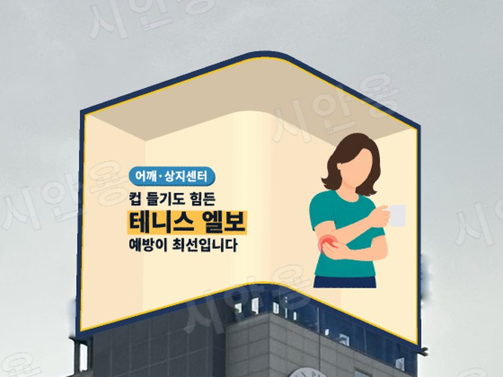
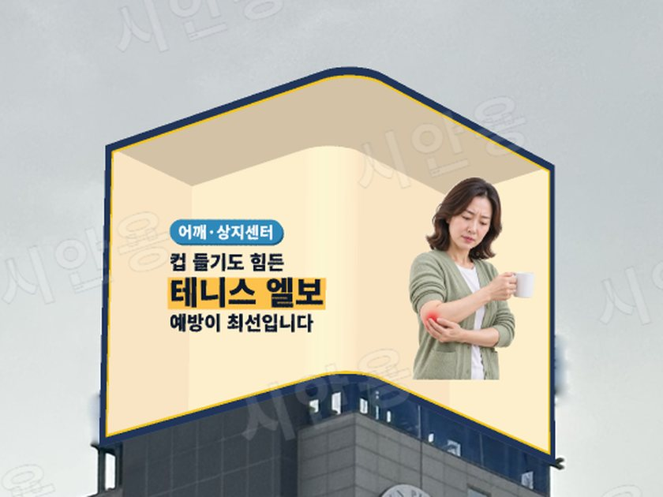

나은필병원 옥상 LED · 원장님 슬로건 시안 · 2026.11.24 · 프리젠
원장님 슬로건, 그림 방식 두 가지
보내 주신 PPT 내용 11개를 한쪽 면은 글 · 한쪽 면은 그림으로 만들었습니다. 문구는 PPT에 가깝게 넣었고, 뒤 체크 무늬는 없앴습니다. 그림 방식을 A 픽토그램과 B 실사 인물(움직임) 두 가지로 만들었으니 골라 주세요.
A픽토그램
회전근개 운동처럼 단순한 그림 인물. 멀리서도 형태가 또렷하고, 진료 내용을 차분하게 전합니다.
B실사 인물(움직임)
PPT처럼 실제 사람 같은 인물이 아픈 곳을 잡거나 걷는 동작을 반복합니다. 눈길을 끌고 공감이 큽니다.
두 방식을 섞을 수도 있습니다. 예: 증상 칸은 B, 운동·응급처치처럼 따라 하는 칸은 A.
건물에서 보면
서쪽 교차로 횡단보도에서 본 모습입니다(테니스 엘보, 정지 장면). 그림은 유리 안쪽 방에 서 있는 것처럼 보입니다.


11개 전체 · 12초씩
LED 두 면을 펼친 화면입니다(가운데가 둥근 모서리). 왼쪽 면에 진료과와 문구, 오른쪽 면에 그림이 나옵니다.
손목 통증(TFCC)
수부·미세재건센터병뚜껑 돌릴 때 아픈 / 손목 통증 / 진료로 원인을 확인하세요
밤마다 손 저림
수부·미세재건센터밤마다 반복되는 / 손 저림 / 전문의와 상담하세요
테니스 엘보
어깨·상지센터컵 들기도 힘든 / 테니스 엘보 / 예방이 최선입니다
어깨 통증 · 회전근개
어깨·상지센터밤마다 심해지는 / 어깨 통증 / 회전근개 손상을 확인하세요
회전근개 예방 운동
어깨·상지센터회전근개 손상 / 예방 운동 / 어깨를 지키는 4가지 동작
ROSA 로봇 인공관절
무릎관절센터인공관절, 내 무릎처럼 / ROSA 로봇 / 인공관절 수술
허리 디스크 내시경
척추센터허리 디스크 수술 / 양방향 내시경 / 정밀하고 안전하게
관절건강 함께해요
무릎관절센터관절건강, / 함께 해요!
무릎 운동과 치료
무릎관절센터무릎 아파도 걸어야 할까? / 내 무릎에 맞는 / 운동과 치료
손가락 절단 응급
수부·미세재건센터손가락 절단 사고 시 / 119 신고 후 / 전문병원으로 신속히
족저근막염
족부·족관절센터걷기 힘든 통증 / 족저근막염 / 무시하다간 허리까지
확인 부탁드립니다
- 그림 방식 · A 픽토그램 / B 실사 인물 / 섞기 중에서
- PPT 7번 빈 장 · 12번째 내용이 따로 있는지
- 문구 · PPT 문구를 전광판에 맞게 줄였습니다. 고칠 곳이 있는지
- 의료광고 심의 · 진료 내용이라 심의가 필요한지 병원에서 확인(허리 디스크의 '안전하게' 같은 표현은 심의 때 바뀔 수 있음)
- 함께 넣을 기존 공익 슬로건 8개 · 원장님 12개 + 공익 8개로 20칸을 채웁니다
답장하실 때 아래 양식을 복사해 쓰셔도 됩니다.
[나은필병원 LED 원장님 슬로건 회신] 그림 방식: A 픽토그램 / B 실사 인물 / 섞기 PPT 7번(12번째 내용): 있음 – / 없음 문구 수정: 의료광고 심의: 필요 / 불필요 / 확인 중 기타 의견: